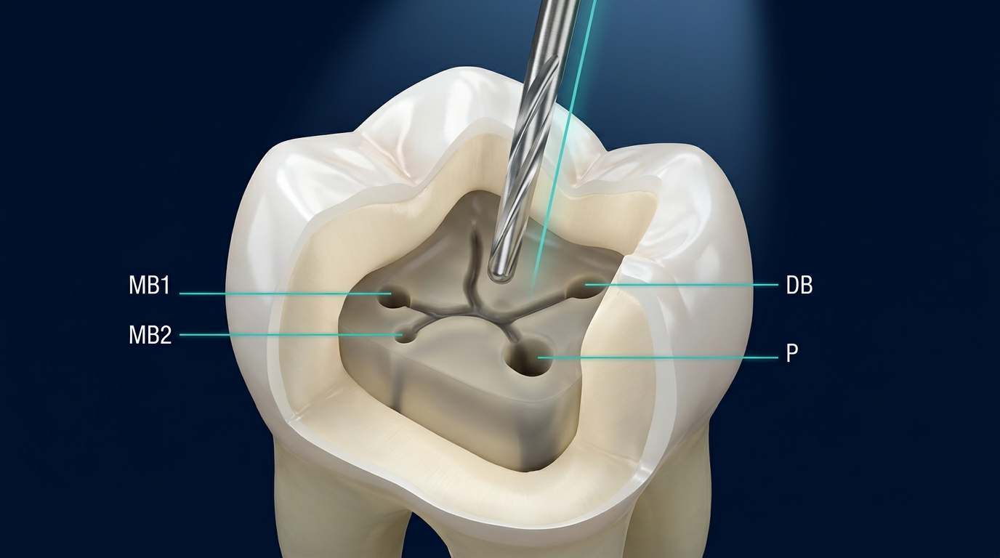

NT-08: Mở tủy và định vị ống tủy: Giải phẫu, sai sót và phòng ngừa thủng

Khi một chiếc răng bắt buộc phải điều trị nội nha, bước mở tủy (Access Cavity) là cánh cửa đầu tiên quyết định toàn bộ sự thuận lợi hay trắc trở của các bước tiếp theo. Mở tủy đúng chuẩn giúp bác sĩ nhìn rõ toàn bộ sàn buồng tủy, tìm đủ tất cả các ống tủy ẩn và đưa trâm vào theo đường thẳng tự nhiên; ngược lại, mở tủy thiếu định hướng dễ dẫn đến bỏ sót ống tủy, gãy dụng cụ hoặc tai biến thủng sàn tủy / thủng thành chân răng.
1. Giải phẫu buồng tủy và "Bản đồ tự nhiên" của Krasner & Rankow
Thay vì khoan mò mẫm theo cảm tính, Nội nha hiện đại dựa vào các quy luật giải phẫu bất biến của sàn buồng tủy (Krasner & Rankow):
- Quy luật đồng tâm và trung tâm: Buồng tủy luôn nằm ở trung tâm của thân răng tại mức đường nối men – xê măng (CEJ). Do đó, trước khi mở tủy, bác sĩ phải quan sát trục chân răng trên phim X-quang và sờ ranh giới cổ răng để định hướng mũi khoan chính xác.
- Quy luật đổi màu: Sàn buồng tủy luôn có màu sẫm hơn rõ rệt so với các thành ngà xung quanh. Ranh giới giữa thành sáng và sàn sẫm là đường dẫn tự nhiên chỉ tới miệng ống tủy.
- Quy luật đường nối phát triển (Developmental Root Fusion Lines): Trên sàn buồng tủy có những đường rãnh sẫm màu nối các miệng ống tủy với nhau như một "tấm bản đồ". Miệng ống tủy luôn nằm ở góc giao nhau giữa thành và sàn buồng tủy, tại điểm tận cùng của các đường nối sẫm màu này.
2. Tư duy mở tủy bảo tồn (MID) vs. Mở tủy kinh điển
Theo triết lý bảo tồn mô răng thật, bác sĩ cần lấy sạch hoàn toàn trần buồng tủy (để không sót mô tủy hoại tử hay mảnh vụn gây đổi màu răng và tái nhiễm), đồng thời tạo được lối vào đường thẳng (straight-line access) cho trâm đi vào 1/3 cổ ống tủy mà không bị vướng cản gây uốn cong quá mức. Tuy nhiên, cần tránh mài phá quá mức vùng ngà quanh cổ răng (pericervical dentin — PCD) nằm cách mào xương ổ răng 4 mm về phía thân và 4 mm về phía chóp, vì đây là "vùng chịu lực sinh tử" quyết định độ bền chống gãy dọc của chiếc răng sau điều trị.
3. Các sai sót thường gặp và cách phòng ngừa thủng
Tai biến thủng (perforation) thường xảy ra do:
- Không ước lượng độ sâu buồng tủy trên phim X-quang trước khi khoan: Dễ khoan quá tay xuyên qua sàn tủy ở răng có buồng tủy bị thu hẹp hoặc canxi hóa ở người trung niên và cao tuổi.
- Đặt sai hướng mũi khoan so với trục thân – chân răng: Đặc biệt ở răng nghiêng trục hoặc răng đã bọc mão sứ làm mất mốc giải phẫu tự nhiên. Nếu không tháo mão hoặc không định hướng theo chân răng, mũi khoan rất dễ ăn lệch ra thành bên cổ răng.
- Dùng mũi khoan đầu cắt sắc nhọn để tìm miệng ống tủy: Khi đã rơi vào buồng tủy, tiếp tục dùng mũi khoan trụ đầu cắt sẽ dễ đào hố sai đường hoặc thủng vùng chẽ (furcation).
Nguyên tắc phòng ngừa an toàn:
- Đo chính xác khoảng cách từ mặt nhai/rìa cắn đến trần và sàn buồng tủy trên phim X-quang trước khi mở.
- Khi đã vào đến buồng tủy, chuyển sang dùng mũi khoan đầu tù không cắt đầu (như Endo-Z hoặc mũi Diamant đầu tròn an toàn) để mở rộng thành bên mà tuyệt đối không làm tổn thương sàn tủy.
- Sử dụng kính lúp hoặc kính hiển vi nha khoa kết hợp đầu siêu âm nội nha tinh tế để bóc tách nhẹ nhàng các cầu ngà canxi hóa che lấp miệng ống tủy phụ (như ống MB2 ở răng hàm trên).
- Nếu không may xảy ra thủng nhỏ, cần cầm máu vô khuẩn ngay và bịt kín tức thì bằng vật liệu sinh học MTA hoặc Biodentine để ngăn viêm tiêu xương vùng chẽ.
Địa chỉ: Số 15 đường Võ Nguyên Giáp, phường Đức Xuân, tỉnh Thái Nguyên
Hotline & Zalo tư vấn trực tiếp: 0912 343 858 · Website: https://tcvuong6-wq.github.io/bsvuong-web/